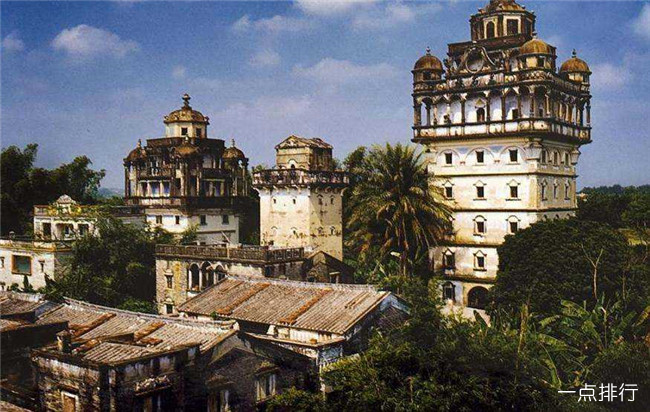

开平碉楼，位于广东省江门市下辖的开平市境内，是广府建筑之一，是广府文化的代表之一。
开平碉楼是中国乡土建筑的一个特殊类型，是集防卫、居住和中西建筑艺术于一体的多层塔楼式建筑，其特色是中西合璧的民居，有古希腊、古罗马及伊斯兰等风格多种。
下川岛地理位置优越，与珠海东南区诸岛一起共处珠海三角洲，东望珠海经济特区、香港和澳门，距珠海西区12海里，距香港、澳门分别87海里和58海里，距国际航道12海里，紧靠中国和东南亚各国海上通道，西至中国的湛江和海南岛，北距台山市最近点4海里。
岛上风光迷人，有沙质优良的天然海滩，有风光旖旎的小岛和海湾，有奇特山景石林，有引人入胜的名胜古迹，有茂密的原始次生森林和动植物奇观以及品种齐全的海鲜珍品，并具有有待建设的深水良港。下川岛于1992年定为广东省旅游开发综合试验区。王府洲旅游中心是省级旅游度假区，年接待国内、港澳台及国外游客10多万人次，旅游业发展方兴未艾，有“中国布吉岛”之美称。
圭峰山是世界地质公园龙虎山—圭峰地质公园和世界自然遗产“中国丹霞”的组成部分，东距上饶60km，西距鹰潭35km，地处三清山、龙虎山和武夷山之间。
森林资源以针阔叶混交林或阔叶林为主，森林覆盖率达90%，植物种类多达100多种。有台湾相思林、三角枫林、荷木林、桉树林等南亚热带常绿阔叶林及针阔叶混交林圭峰山上野生动物资源丰富，是穿山甲、狸猫、蟒蛇、金猫、黄嘴白鹭、金丝鸟、白头翁等珍稀野生动物的栖息区。